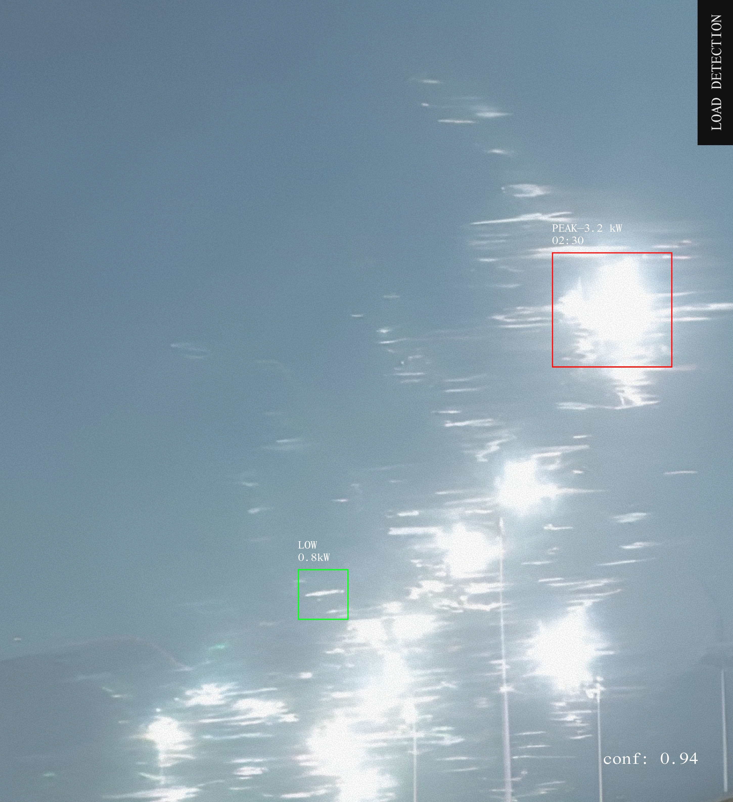
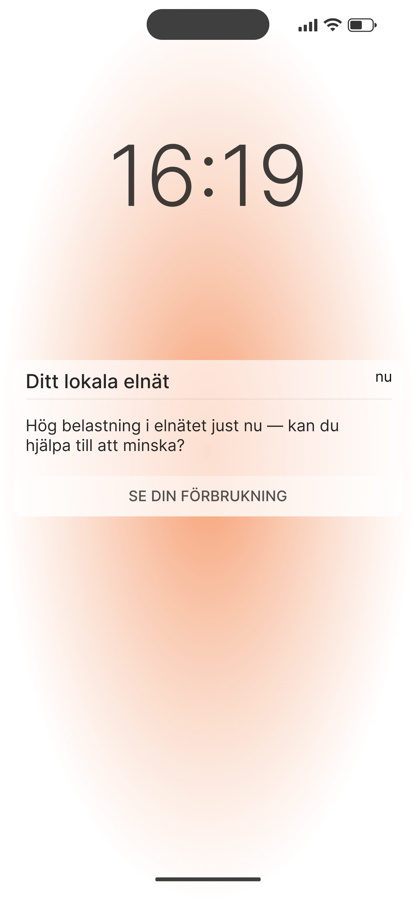
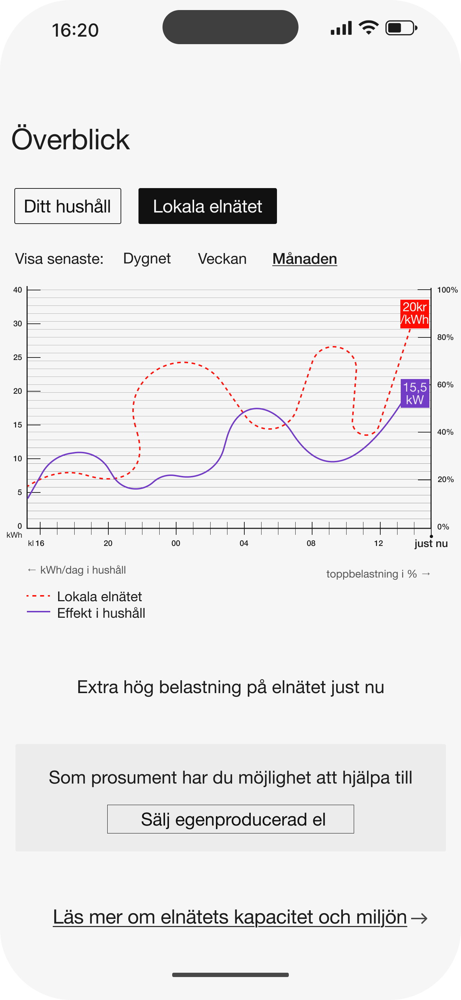

How do people understand energy, cost and climate impact in everyday life?
Energy is abstract and invisible until it needs our attention. This project explored how energy can be made tangible through design - particularly in the context of power-based tariffs (effekttariffer), where households are charged based on peak consumption rather than total use.
A collaboration between
KTH,
Uppsala University,
Ellevio
and
Bright,
with funding from
Energimyndigheten↗
Rather than framing energy behaviour as a technical problem, we approached it as a question of perception. Through interviews, workshops, and usability testing with consumers and prosumers, I developed and tested concepts for interfaces and ambient objects.
My contribution ran from November 2021 to July 2022 and followed a Research by Design (RbD) methodology, using design to investigate the research question.

WHAT WE LEARNED
My contribution focused on user research — facilitated workshops and concept development, translating energy systems into design solutions. Key findings from the research:
- Economic impact is the primary motivator. Climate benefit registers as a welcome side effect, not a primary driver.
- Users want to see the direct link between actions, consumption and cost - and how energy is framed matters as much as the data itself.
- Personal historical data is far more motivating than benchmarks against other households.
- Feedback needs to be timely and contextual to drive action, information presented retrospectively loses its impact.
- Not all users want to actively monitor their usage. Some prefer energy information as a background signal rather than something to seek out.
Two distinct user groups emerged from the research: Active users wanted depth and control (data-driven, curious, willing to engage). Ambient users wanted relevance over detail — so the work split into two distinct directions.




Some users didn't want to depend on a screen. This led to exploring a lamp that communicates household or local grid load through light intensity and color. It asked a different question - can energy awareness live in a room without demanding your attention?
Testing the app with 10 participants (5 prosumers, 5 consumers) confirmed the split. Prosumers engaged with the data directly. Consumers responded primarily to real-time price in relation to their own usage.
The lamp was tested through room-based scenarios. It evoked something else - curiosity, reflection, a shift in awareness rather than immediate action. Most participants intuitively read warmer, redder light as higher load, although some ambiguity remained around the lamp’s color and intensity variations.